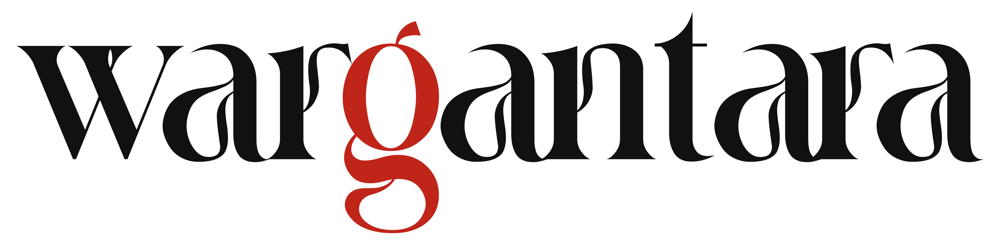

TRACE · Risk Console
Home
Members
Lore
Guidelines
General Guidelines
Collab with Us
Home
Members
Lore
Guidelines
General Guidelines
Collab with Us
AR-CID Editor
Credits
// Navigasi
00
Cover
01
Dashboard
02
TRACE Register
03
Matriks Risiko
04
Contingency Plan
05
Triage Tree
06
SOP Darurat
07
Cara Jadi Streamer
08
SWOT Member
09
SWOT Wargantara